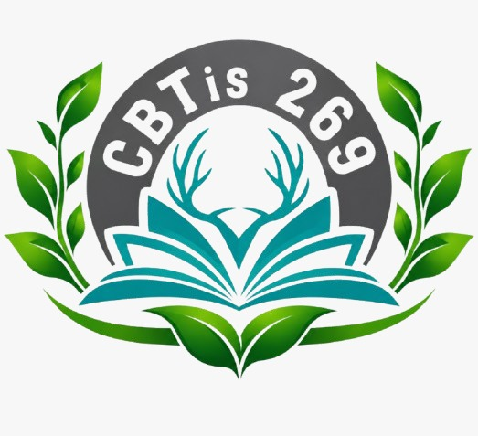

En el presente tiempo, el mal uso del medio ambiente y un buen tratamiento de los residuos se han
transformado en retos ineludibles para la sociedad y las comunidades educativas. Las instituciones
educativas, ante esta situación, juegan un papel transformador como engranaje del proceso de la
educación; pues no solo educan académicamente, sino que construyen la conciencia ecológica de las
generaciones venideras. El proyecto PAEC: Eco-Venados Transformando el Entorno surge con la
intención de lanzar a la participación de la comunidad escolar en la reducción y en el buen
tratamiento de las basuras sólidas.
Este proyecto parte de la base de que la crisis ambiental global se enfrenta desde el accionar
local. Por eso intenta facilitar la recuperación y ampliación de los pequeños espacios verdes
del plantel a través del ejercicio práctico de la concientización, la limpieza, el reciclaje y
la reforestación para contribuir con las mejoras ecológicas de los espacios escolares. Se quiere
construir un espacio de reflexión y acción entre el alumnado, el profesorado, el personal
administrativo, todos constituyendo un sólo cuerpo alimentado para construir un hermoso campus
limpio, sustentable, comprometido con el futuro de nuestro planeta.
Promover la participación de la comunidad educativa en la reducción y manejo adecuado de los residuos sólidos, asi como en la recuperación y ampliación de las áreas verdes del plantel, mediante acciones de concientización, limpieza. reciclaje y reforestación que contribuyan al cuidado del medio ambiente y al mejoramiento de los espacios escolares.